Котляр Л. М., Сафронов М. А.
unit=0.6cm
|
Рассматривается двумерная задача о взрыве заглублённого линейно-распределённого заряда криволинейной формы в виде дуги эллипса (рис.  а).
Используя импульсную постановку, предложенную М. А. Лаврентьевым [3], задачу можно свести к исследованию плоского потенциального течения идеальной невесомой жидкости в плоскости
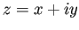, ограниченного криволинейным участком , прямолинейными границами 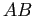 и и линией тока , на которой модуль скорости постоянен и равен 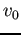 (рис.
а).
Используя импульсную постановку, предложенную М. А. Лаврентьевым [3], задачу можно свести к исследованию плоского потенциального течения идеальной невесомой жидкости в плоскости
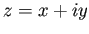, ограниченного криволинейным участком , прямолинейными границами 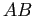 и и линией тока , на которой модуль скорости постоянен и равен 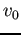 (рис.  а) и которая является границей воронки выброса (в силу симметрии рассматривается правая половина течения).
Потенциал скорости течения принимает постоянное значение на границе заряда , а на поверхности грунта равен нулю.
а) и которая является границей воронки выброса (в силу симметрии рассматривается правая половина течения).
Потенциал скорости течения принимает постоянное значение на границе заряда , а на поверхности грунта равен нулю.
Для решения задачи вводится вспомогательное переменное
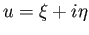 (см. рис.  б), изменяющееся в области 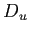 -- прямоугольнике со сторонами 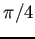 и
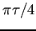 (
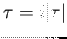).
На основании граничных условий для комплексного потенциала 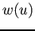, используя свойства эллиптических функций [4, стр. 350] и метод особых точек [1], найдём:
б), изменяющееся в области 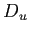 -- прямоугольнике со сторонами 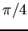 и
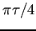 (
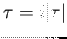).
На основании граничных условий для комплексного потенциала 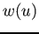, используя свойства эллиптических функций [4, стр. 350] и метод особых точек [1], найдём:
Рассмотрим функцию Жуковского [1, с. 30]
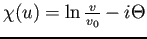, где -- модуль скорости, -- угол наклона вектора скорости к оси абсцисс, представив её в виде
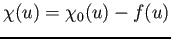, где 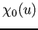 -- функция Жуковского для фиктивного течения по схеме на рис.  в, функция
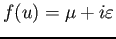 -- аналитическая в и непрерывная в
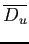 функция.
в, функция
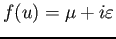 -- аналитическая в и непрерывная в
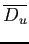 функция.
Функция легко строится [2]:
Сравнивая граничные условия для  и , получим, что:
и , получим, что:
Отображая область на полукольцо и, учитывая граничные условия для , представим её в виде
Все геометрические и гидродинамические характеристики течения и граница воронки выброса находятся из соотношения
This document was generated using the LaTeX2HTML translator Version 2008 (1.71)
Copyright © 1993, 1994, 1995, 1996,
Nikos Drakos,
Computer Based Learning Unit, University of Leeds.
Copyright © 1997, 1998, 1999,
Ross Moore,
Mathematics Department, Macquarie University, Sydney.
The command line arguments were:
latex2html -split 0 -external_file buriedexplosion-standalone.aux buriedexplosion-standalone.tex
The translation was initiated by hijarian on 2011-09-08